鷲羽岳～水晶岳
| 日付 | 2023年8月14日（月） - 2023年8月19日（土） | ||||||||
|---|---|---|---|---|---|---|---|---|---|
| 山域 | 北アルプス | ||||||||
| メンバー | 家族（妻、長男・10歳） | ||||||||
| 山行形態 | 子連れ5泊6日旅館、山小屋、キャンプ泊 | ||||||||
| アクセス | 車 | ||||||||
| ルート (Map) |
|
3日目
昨夜は屋根を叩きつける雨と風の音がすごかった。
台風は日本海に抜けたはずだが、雨は降り続いている。
台風は離れていくはずなので、出発せずにしばらく様子を見る。
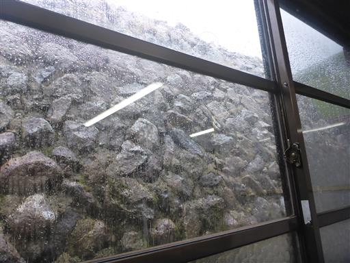
一向に雨が止む気配が無いため、カッパを着て10時をめどに小屋を出発。
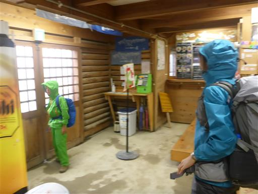
降り続く雨。風はほとんど吹いていない。本日は水晶小屋まで行く予定。
天気が悪いので、全てのピークをスキップして、巻道を行くことにする。
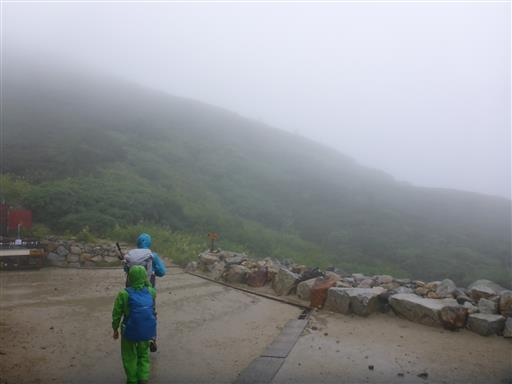
ヒルだろうか？
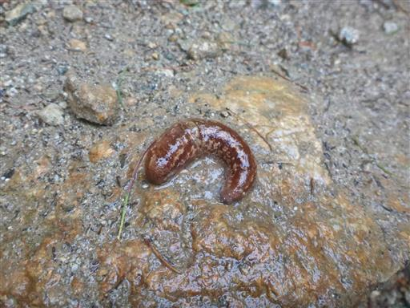
一登りで巻道分岐に到着。双六岳と三俣蓮華岳は諦めて巻道を行く。
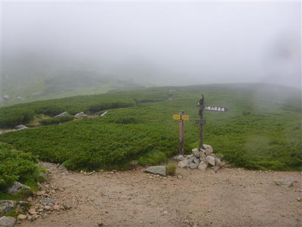
傾斜は緩く、かなり安全に歩ける巻道だ。
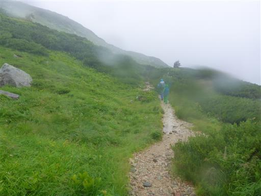
ウサギを発見。北アルプスにウサギがいるとは思わなかった。
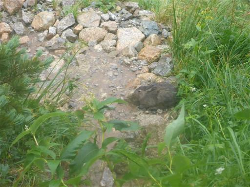
お次はライチョウ。天気が悪い日には遭遇率が高い。
親鳥と3～4羽の雛がいる。
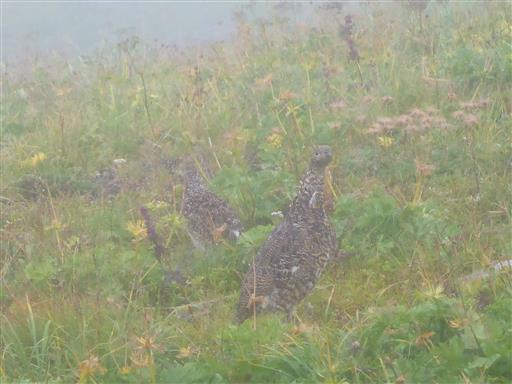
ハイマツが覆いかぶさっていて歩きにくい。
フードを被っていると、上の視界が遮られてしまう。
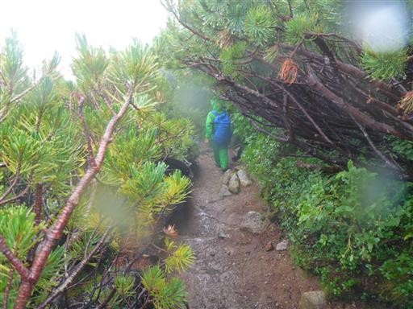
小さな沢を渡る。雨が降り続いているが、渡渉が困難なところはない。
一方、登山道が川のようになっているところがある。
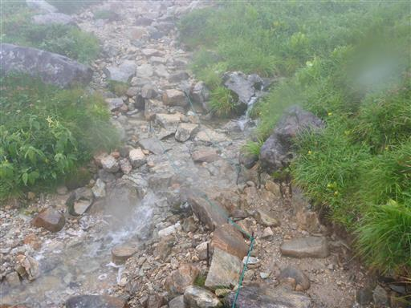
木のトンネル。
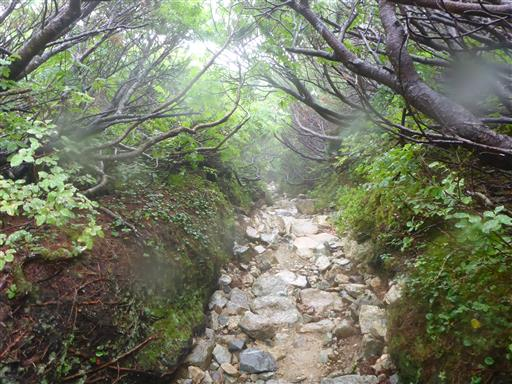
カエルを発見。
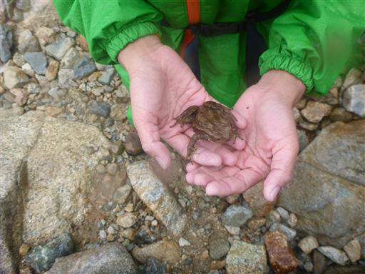
中継地点の三俣山荘に到着。小屋の庇の下で昼食をとる。
息子はここで足を止めたことで歩く気力を失ってしまったため、本日の行動はここまでとする。

水晶小屋と三俣山荘は同じ系列なので、予約の変更はスムーズ。
台風で小屋はガラガラなので、融通が利くのはありがたい。
濡れた服を着替えて体を暖めてゆっくりとくつろぐ。
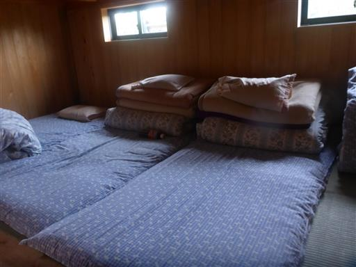